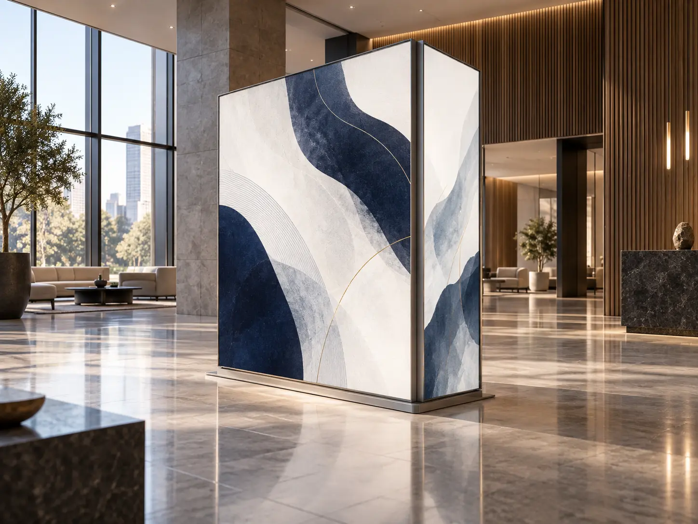
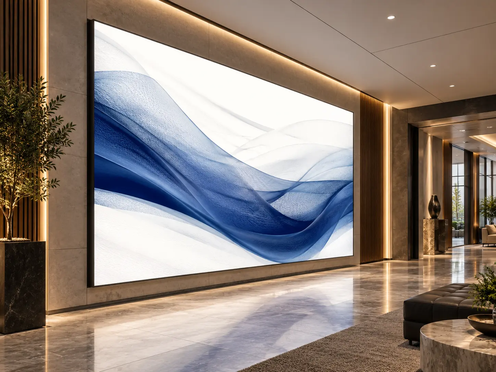

Size
Standard or made to measure
The frame stays. The graphic changes. LumosForma uses silicone-edge graphics (SEG): fabric with a silicone edge that fits into the frame’s groove. Choose Frame without lighting or Light with backlighting.
Explore the two systemsFrame presents fabric graphics without integrated lighting. Light illuminates the graphic from behind. Both allow graphic replacement without replacing the frame.

A non-lit aluminum frame with replaceable fabric graphics. Options include single- or double-sided, wall-mounted, freestanding, suspended and window-fit displays. Mounting options depend on the profile.
View profiles + specifications
An aluminum frame with integrated backlighting and a replaceable fabric graphic. Choose Standard Backlighting, High Output or Light-Guided Acrylic according to display depth, size and required brightness.
Explore LumosForma LightStandard or made to measure
Replaceable silicone-edge fabric
Clear anodized, white, black or custom RAL colour
Wall, freestanding, recessed or suspended
Backlighting for Light; none for Frame
Remove and replace the fabric graphic